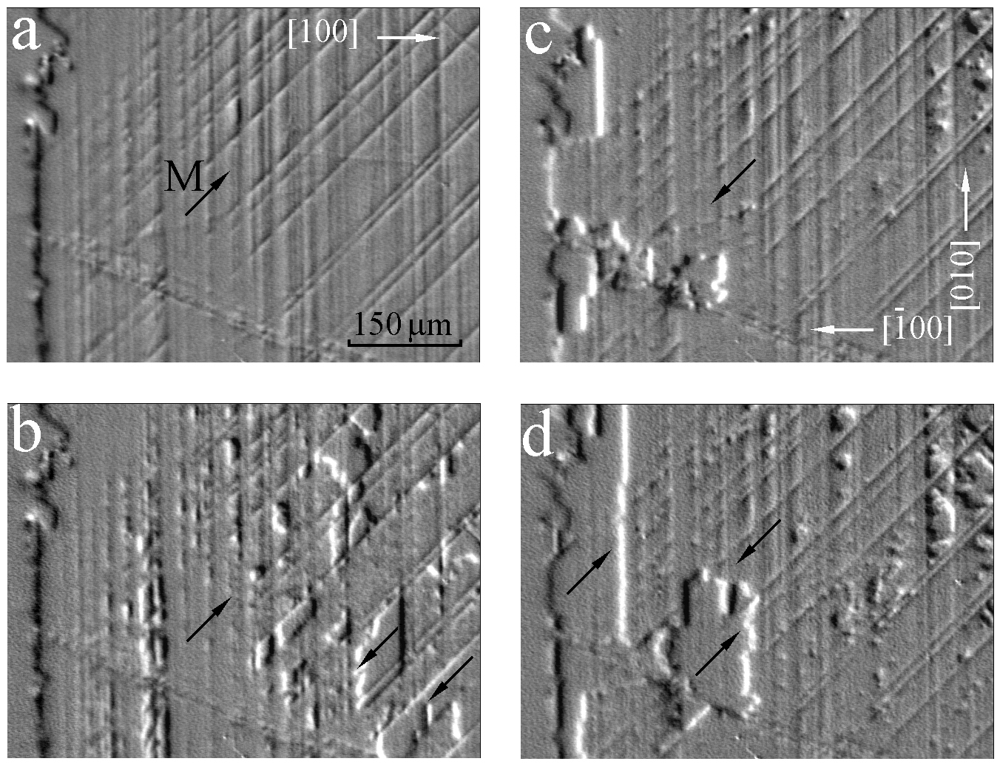

Figure 3:
MOIF images of the same sample region during the [110] unidirectional-axis remagnetization in the MgO(001)/NiO/NiFe sample. Applied field µH = -3.0 (a), +1.6 (b), -6.2 (c), and -6.4 mT (d). Arrows (here and in the following figures) indicate the local magnetization direction.